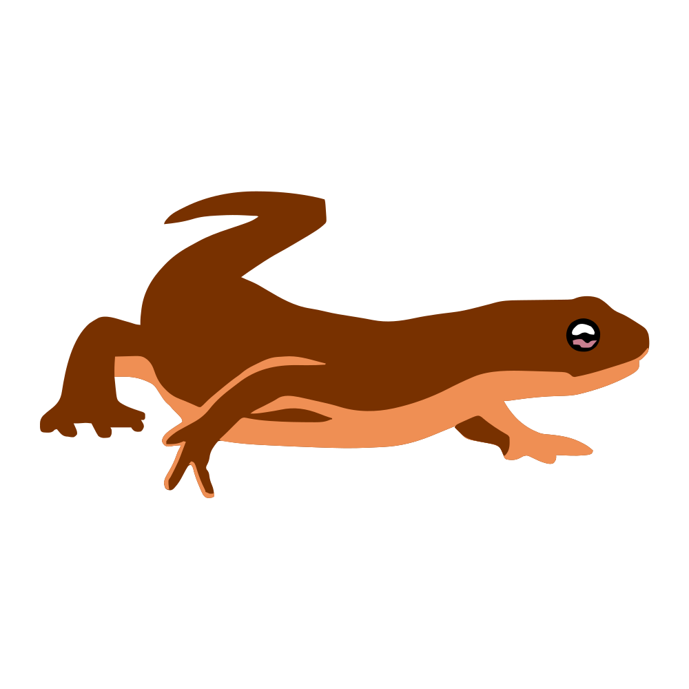
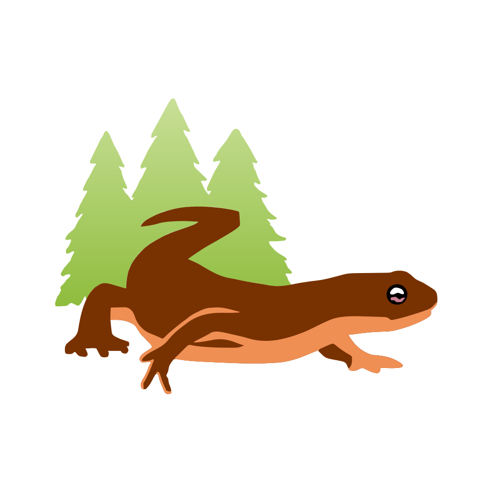

Variants
Choose the variant that fits the intended background and layout. SVG files are high-quality, resolution-independent vectors for print, signage, and high-resolution displays. PNG files are transparent, lossless raster logos supplied at 400, 800, and 1200 pixels. Download and place the supplied asset that matches the intended layout.








Color Palette
These hexadecimal values document the supplied files.
Salamander & tree colors
Salamander brown
#783100Salamander orange
#EF8F54Salamander eye
#C97F90Tree gradient
#C8DF97 → #8FBD3DText colors
Primary text — light
#4A220ASubtitle text — light
#783100Primary text — dark
#B4CF78Subtitle text — dark
#B2B0AD